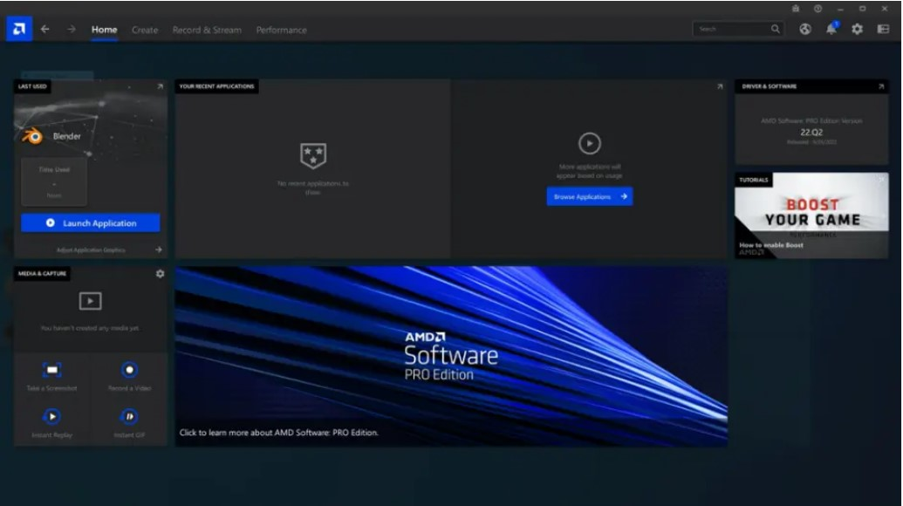

AMD 发布最新版的 AMD 软件：企业级专业版
近日，AMD宣布发布最新版的AMD软件：企业级专业版（此前称为“Radeon PRO企业级驱动程序”）驱动程序，适用于Radeon PRO专业级显卡。凭借最新版驱动程序，专业用户有望实现更快的渲染速度和更短的视频编码时间、更平稳的3D模型交互性能、流畅的光线追踪效果和GPU加速的计算。
新版软件的主要功能包括：
1. 性能提升
最新版的驱动程序包含重要的优化，可提高Radeon PRO工作站显卡和图形密集型应用程序的性能。
2.Maxon Redshift的支持
Maxon Redshift增加了对AMD Radeon PRO W6800显卡的支持。Redshift的内容创作者如今可拥有更丰富的显卡选择，可以在更短的时间内完成生产级品质的渲染。Redshift的渐进式渲染可利用Radeon PRO W6800显卡全部32GB显存，以帮助优化帧缓冲存储并实现实时的模型操控。